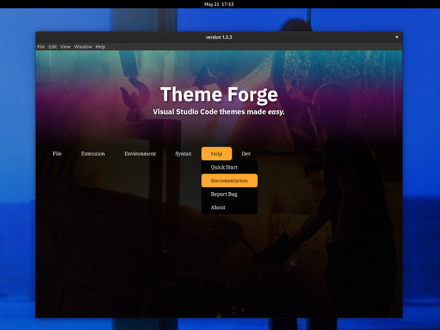

<section>
    <div class="rows"><h2>Theme Forge</h2>
        <div class="content">
            <h3>Description</h3>
            <p>
                Theme Forge is a graphical theme editor for Visual Studio Code.  It is coded using Electron and NodeJS. It is my baby, and my largest application to date.
            </p>
            <div class="gallery">
                
                
                
            </div><br>

            <h4>How it works</h4>
            <p>
                Theme Forge loads hex color data in the form of JSON for modification.  It also loads package.json information pertaining to the VSCode theme that is being edited.  Essentially, there are three main parts to ThemeForge:
            </p>
            <ul>
                <li>An <strong>extension editor</strong> to edit package.json details, like author, theme name, display name, icon path, etc.</li>
                <li>An <strong>environment editor</strong> to edit the colors of different UI components of VSCode</li>
                <li>Lastly, a <strong>syntax editor</strong> to edit the colors of the syntax highlighting as defined by TextMATE scopes</li>
            </ul><br>
            <h4>Needed Improvements:</h4>
            <p>In an attempt to make it modular, I designed what has become an absurdly complex menu system (in terms of code legibility).  I have since experimented with a class-based menu approach, using function binding to retain that modularity, however, I just haven't had enough to time to rework the app.</p>
            <p>I also want to implement an algorithm to calculate a wide color palette based on only five or six colors. It would have to determine when to use inverse colors (ie, light colored text with darker UI components and vice versa).</p>
            <p>Overall, this app is an albatross that needs tons of refinement.  I have learned so much since I began coding it and although I cringe when I open it, I am looking forward to optimizing this application and launching it as a VSCode extension.</p>
            <h3>GitHub Repository:</h3>

            <p><em>NOTE: Electron has issues with using native file-system dialogs when ran from the VSCode terminal in arch linux.  I don't know if this is a sandboxing issue, but I have to run it using 'npm start' in the Gnome Terminal for the file-system dialogs to function correctly.  I don't believe it has anything to do with permissions as 'sudo' doesn't seem to help.</em></p>
            <a href="https://github.com/djweaver-dev/themeforge" target="_blank">https://github.com/djweaver-dev/themeforge</a>
        </div>
    </div>
</section>